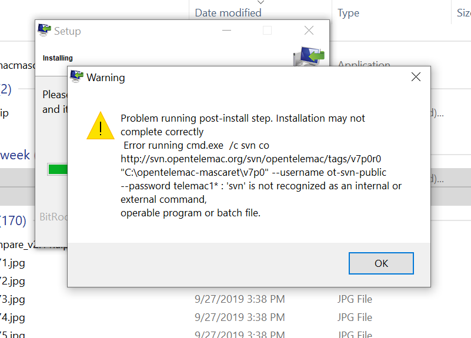

Jason Duguay, PhD.
Postdoctoral fellow Université de Sherbrooke
Sherbrooke, Québec
Phone: 819-588-0251
E-mail: duguay.jason@gmail.com
Last updated:

Figure caption: The first screen of terror you might have come across when trying to use Open Telemac-Mascaret's so called 'automatic' installer available for download on their website.
Posted October 4th, 2019
Installing Open Telemac-Mascaret with the not so 'automatic' installer on Windows 10:
The steps below will hopefully help you install the Open Telemac-Mascaret suite of solvers on your Window's 10 machine. Feel free to contact me if the installation steps are not working for you.
- Download the opentelemacmascaret-5.2-windows-installer.exe from the open telemac website (you will need to create an account first).
- Double-click the opentelemacmascaret-5.2-windows-installer.exe
- Follow on-screen instructions and accept all default values. You will need to be present during this part to click ‘Next’ and ‘Finish’. This step will install a folder with name and location C:\opentelemac-mascaret and add a bunch of prerequisite files to it. Keep clicking 'yes' or 'okay' on whatever the installation file pops-up, eventually it will crash with an error. No need to worry …
- Open your Environment Variables by searching for Environment Variables in the task bar, then select the Path variable in the System Variables dialog, then click Edit. Make sure that C:\Program Files\TortoiseSVN\bin is present in the list, if not, add it by clicking on New and adding C:\Program Files\TortoiseSVN\bin as a new entry. Once you are done this, double-click again on the opentelemacmascaret-5.2-windows-installer.exe.
- This time, when prompted to Select Components, deselect Software Installation: Pre-requisites. The ghosted-out open TELEMAC MASCARET + source code should be checked, not that you have the choice to uncheck it.
- If everything worked correctly up to this point, you will have the choice to install v8p0. Check the v8p0 box and click next, okay or whatever is needed to get to the next step. Again, if everything works correctly, you should see a bunch of lines of text printing out on a black command prompt. This is good, these are the source code files being downloaded using the SVN client. It can take up to 30 minutes to download them all, so be patient …
- Once everything is downloaded, you will be prompted to start the compilation of the source code. Click yes. It will shortly crash with an error. Again, have no fear.
- To fix the crash, you need to replace the C:\opentelemac-mascaret\v8p0\configs\systel_v8p0.cfg with this modified systel_v8p0.cfg file.
- On your desktop, there should now be a shortcut called TELEMAC v8p0. Double-click on it. Write the following command out in the command prompt: compileTELEMAC.py -f C:\opentelemac-mascaret\v8p0\configs\systel_v8p0.cfg and hit Enter.
- If everything went well up until now the compilation should start and you will see lines printing out in the command prompt. After 30 or so minutes it will likely end with an error (Missing cmd_obj_c in your configuration file to compile mascaret C dependencies). This error is because the Mascaret module compilation did not work. Unless you really need to use Mascaret (a 1D flow model) then you don't need to worry. All of the other modules should have been installed correctly. And you will be able to use the TELEMAC v8p0 command prompt to launch your simulations.